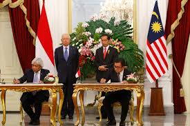
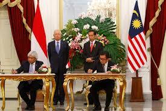

Pengertian:
Kerja sama bilateral merupakan kerja sama yang dilakukan oleh 2 negara, yang bertujuan untuk membina hubungan dan menjalin kerja sama dalam berbagai bidang. Kerja sama dalam bidang bilateral biasanya dilakukan antara 2 negara yang memiliki hubungan diplomatic. Indonesia sendiri memiliki hubungan kerja sama bilateral dengan sebanyak 162 negara. Kerja sama bilateral dapat tercapai setelah kedua negara menandatangani sebuah persetujuan yang akan dijadikan sebagai acuan dalam kerja sama tersebut.
Contoh:
Contohnya adalah persetujuan Indonesia-Japan Economic Partnership Agreement ( IJEPA ) antara Indonesia dan Jepang yang didirikan sejak tahun 2008. Selain itu ada juga kerja sama Indonesia dengan Malaysia dalam bidang pendidikan dengan tujuan yaitu memperbanyak jumlah sekolah Indonesia di wilayah Malaysia serta memperbanyak jumlah tenaga pengajar Indonesia pada sekolah - sekolah tersebut dan yang pastinya mengadakan program pertukaran dari Indonesia ke Malaysia dan sebaliknya setiap tahun.
Peran Indonesia dalam kerjasama:
Kerja sama bilateral bukan lagi hal baru untuk Indonesia seringkali dilakukan kerja sama dalam banyak sekali bidang demi kebaikan negara kita. Contohnya adalah program pertukaran pelajar yang dilakukan khususnya dengan negara malaysia, melalui kegiatan ini, para pelajar dapat meningkatkan penguasaan bahasa asing dan memperdalam ilmu yang ingin mereka pelajari. Indonesia berperan dalam mengirimkan pelajar ke Malaysia dan sebaliknya Indonesia akan menerima pelajar dari Malaysia.
Ada juga peran Indonesia dalam kerja sama bilateral bidang ekonomi, contohnya adalah IJEPA dimana Indonesia berperan dalam mengekspor jasa bisnis kepada negara Jepang, selain itu Indonesia juga mengirimkan sebanyak 622 tenaga perawat dan 1.494 tenaga perawat lansia bagi negara Jepang. Tentunya selain memberikan sumber daya tersebut kepada Jepang, Indonesia juga mendapatkan impor jasa rekreasi budaya dari Jepang serta penanaman banyak investasi di negara kita.
Selain kerja sama bilateral dalam bidang pendidikan dengan negara Malaysia, Indonesia juga memiliki kerja sama yang lain dengan negara Malaysia yaitu dalam bidang keamanan. Indonesia dan Malaysia mengadakan latihan gabungan militer dengan tujuan keamanan perbatasan masing - masing negara. Setelah Itu Indonesia dan Malaysia bekerja sama untuk membuat satelit mikro yang ditujukan untuk memantau kondisi dari masing - masing negara.
Apa yang didapat Indonesia dari kerjasama?
IJEPA merupakan perjanjian antara Indonesia dan Jepang yang diadakan sejak tahun 2007, perjanjian ini memiliki 3 pilar utama yaitu liberasi, fasilitasi dan peningkatan kapasitas. Indonesia memutuskan untuk membuat perjanjian ini dengan Jepang demi meningkatkan kegiatan impor, ekspor, dan investasi di kedua negara, terkhususnya tentunya di Indonesia sendiri.
Selain itu investasi Jepang yang ada di Indonesia naik dengan signifikan dari 2,6% pada tahun 2000 sampai dengan tahun 2008 hingga menjadi 28,9% pada tahun 2009 sampai pada dengan tahun 2017 kemarin. Kegiatan impor ekspor dari kedua negara juga naik dengan signifikan serta membuka banyak lapangan kerja, perkembangan industri pendukung, dan yang pastinya pertumbuhan ekonomi yang akan meningkatkan daya beli masyarakat